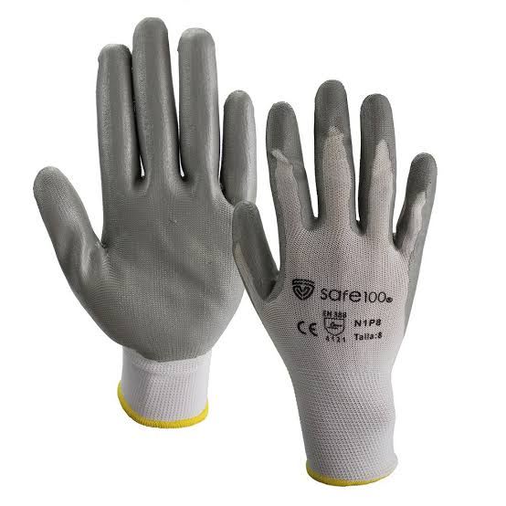
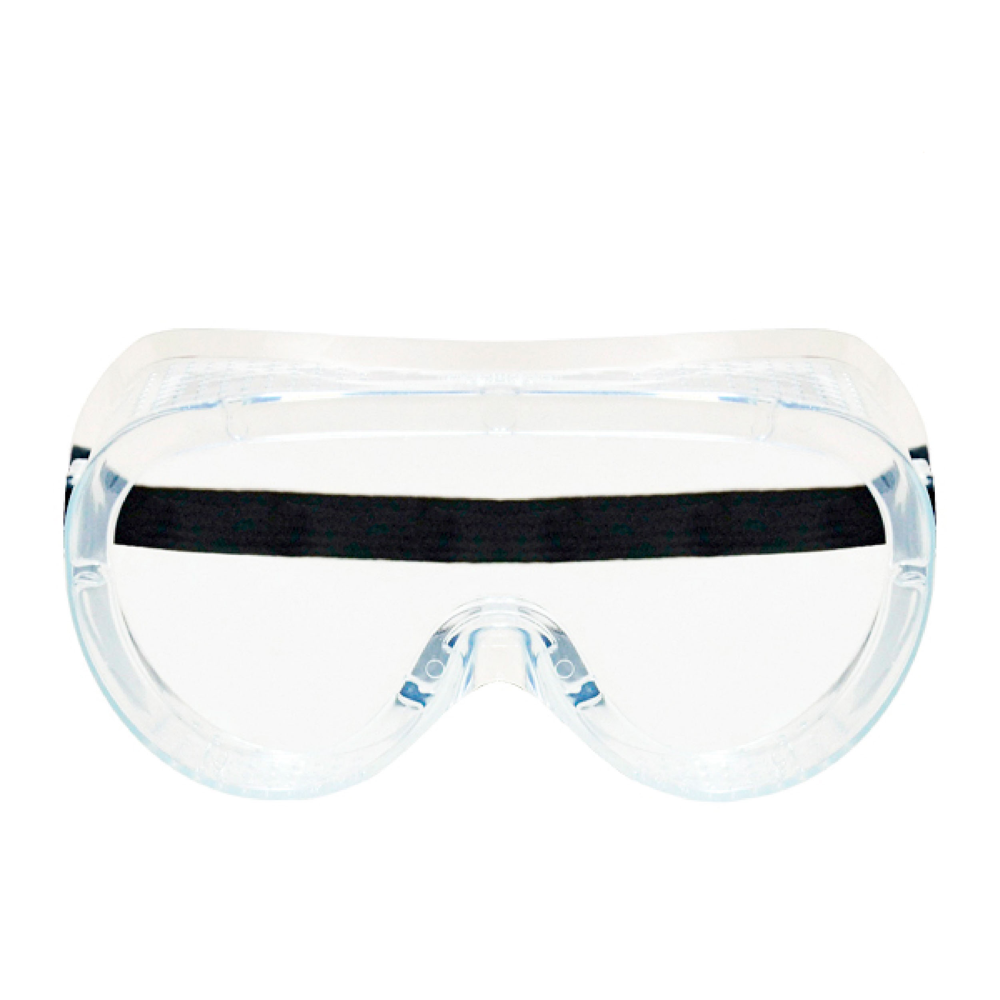
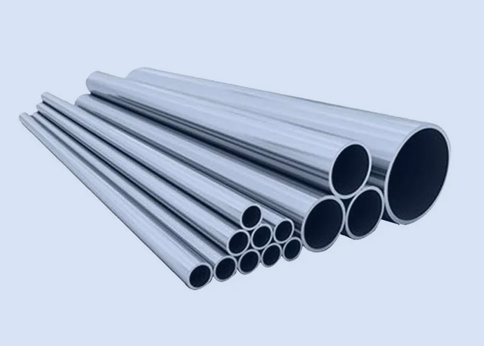

Motobomba de diafragma
Equipo encargado de succionar y transportar el lodo mediante bombeo.
Equipo encargado de succionar y transportar el lodo mediante bombeo.

Manguera reforzada que permite extraer el barro y conducirlo al depósito.

Permiten unir las mangueras y facilitar el montaje del sistema.

Aseguran las uniones y ayudan a evitar fugas durante la operación.

Filtra residuos grandes para proteger la entrada de la motobomba.

Almacena el agua necesaria para las actividades del prototipo.

Recibe y almacena temporalmente el barro extraído.

Combustible utilizado para alimentar el motor de la motobomba.

Protegen los pies durante el trabajo en superficies húmedas y con lodo.

Ayudan a reducir la exposición al ruido generado por la maquinaria.

Protegen las manos al manipular mangueras, herramientas y materiales.

Protegen los ojos contra salpicaduras y partículas.

Material resistente a la corrosión que puede utilizarse en componentes estructurales.

Facilitan el desplazamiento del prototipo sobre el terreno.